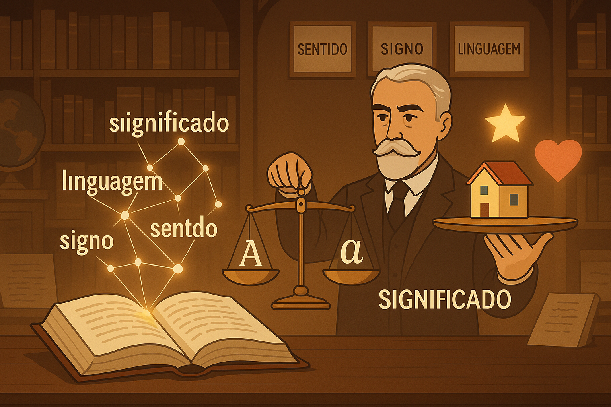

Noções Iniciais de Semântica: o Significado nas Palavras
A linguagem humana distingue-se de qualquer outro sistema de comunicação natural por sua extraordinária capacidade de produzir, transformar e articular significados complexos. No cerne dessa engrenagem está a Semântica, o ramo da Linguística dedicado à investigação científica do significado das palavras, das sentenças e dos enunciados em circulação social. Sua raiz etimológica remonta ao verbo grego semainô ("significar", "indicar", "dar a entender") e ao adjetivo semantikós ("relativo ao significado"), termo introduzido formalmente nos estudos modernos da linguagem pelo linguista francês Michel Bréal no fim do século XIX.
Embora a indagação sobre o sentido das palavras remonte à Antiguidade clássica — com reflexões seminais de Platão no diálogo Crátilo e de Aristóteles em Da Interpretação —, foi com o advento da Linguística Estrutural e das ciências da cognição que a Semântica consolidou um corpo teórico-metodológico autônomo. Segundo Stephen Ullmann (1970, p. 11), “a semântica é a ciência do significado”, tendo por objeto primordial elucidar como os signos linguísticos codificam a experiência humana, representam estados de coisas no mundo e viabilizam o entendimento intersubjetivo.
Compreender os fundamentos da semântica afasta a falsa impressão de que os dicionários contêm a totalidade estática da língua. Como postulou Ferdinand de Saussure (1916), a língua constitui um sistema de signos no qual o valor de cada termo decorre de sua posição diferencial em relação aos demais. Nesse sentido, estudar o significado exige analisar tanto a estabilidade das convenções lexicais quanto a dinâmica plástica e produtiva do sentido no discurso vivo.

O signo linguístico saussuriano: a arquitetura do significado
Para desvendar como as palavras significam, o ponto de partida clássico é a teoria do signo linguístico formulada por Ferdinand de Saussure (1916). Na concepção saussuriana, o signo não une um nome a uma coisa, mas sim duas entidades estritamente psíquicas e inseparáveis, comparáveis às duas faces de uma folha de papel:
- Significante (imagem acústica / representação gráfica): é a dimensão sensorial e material do signo, correspondente à cadeia de fonemas ou grafemas (por exemplo, a sequência sonora /kˈa.zɐ/ ou as quatro letras impressas que compõem a palavra casa).
- Significado (conceito / imagem mental): é a representação conceitual ou categoria psíquica evocada pela forma material (a ideia culturalmente partilhada de uma habitação ou espaço de abrigo).
O princípio da arbitrariedade do signo
Saussure (1916, p. 79) estabelece que o laço que une o significante ao significado é arbitrário: não existe nenhuma relação motivada, natural ou biológica entre a sucessão de sons da palavra mesa e o objeto com tampo e pés que ela designa. Prova incontestável dessa arbitrariedade é a diversidade das línguas históricas: aquilo que em português conceituamos como livro, expressa-se em inglês como book, em francês como livre e em alemão como Buch. A significação é uma convenção sócio-histórica institucionalizada.
Significado versus Sentido: estabilidade lexical e mobilidade contextual
Na linguagem corrente, os vocábulos "significado" e "sentido" são amiúde tratados como sinônimos perfeitos. Na Linguística, todavia, a distinção entre ambos é essencial para compreender como a língua concilia estabilidade de vocabulário e flexibilidade interpretativa.
Significado (Valor Sistêmico / Convencional)
Constitui o núcleo semântico relativamente estável e convencionado de um item lexical, codificado na memória compartilhada dos falantes e dicionarizado sob forma de verbetes e traços definidores.
Natureza: Pertence ao sistema abstrato da língua (langue), assegurando a previsibilidade necessária para que os indivíduos compreendam o léxico básico sem ruídos estruturais.
Exemplo: O significado básico de estrela: corpo celeste com luz própria constituído por plasma luminoso.
Sentido (Realização Discursiva / Contextual)
Representa a concretização semântica móvel que o signo adquire quando mobilizado em um enunciado concreto, delimitado por intenções, situações comunicativas e repertórios culturais.
Natureza: Emerge no uso discursivo e na enunciação viva (parole), sendo ativado por recursos como metáfora, ironia, ênfase estilística e enquadramento situacional.
Exemplo: O sentido de estrela em: "A cientista brasileira foi a estrela da conferência internacional" (sentido de destaque, primazia, brilhantismo intelectual).
Como elucida José Luiz Fiorin (2001, p. 14):
“O significado é a parte convencional e compartilhada de um signo linguístico; o sentido é aquilo que o signo adquire no uso, dependendo da situação, da intenção comunicativa e dos interlocutores.”
Essa dialética elucida por que um único verbete gera inúmeras leituras dependendo de seu enquadramento textual:
- No universo astrofísico: "Detectou-se uma nova estrela na constelação de Órion" (significado denotativo / conceitual de corpo celeste).
- No universo midiático e artístico: "A cantora foi a estrela do festival de música" (sentido de protagonista / figura central).
- No universo místico e oracular: "Cada indivíduo nasce sob uma estrela singular" (sentido de fado, fortuna ou destino).
- No jargão de avaliação e consumo: "O aplicativo recebeu nota de cinco estrelas na loja virtual" (índice semiótico de qualidade excelente).
A ilusão referencialista: a palavra não é o objeto
Um erro conceitual recorrente na compreensão leiga é confundir o significado com o referente físico no mundo exterior. As palavras não "são" as coisas materiais; elas organizam representações conceituais. Podemos enunciar termos como unicórnio, saci ou velocidade da luz e produzir significados perfeitamente inteligíveis para qualquer ouvinte, independentemente de haver um exemplar material empírico diante dos olhos. O significado é uma realidade semiótica da cognição e da cultura.
Abordagens contemporâneas aos estudos semânticos
Dada a complexidade do fenômeno da significação, a Semântica organiza-se em diferentes campos de investigação teórica, cada qual com focos de observação e metodologias analíticas próprias:
| Vertente Semântica | Objeto Central de Estudo | Postulado Teórico Principal | Foco de Aplicação |
|---|---|---|---|
| Semântica Lexical | O significado das palavras individuais e das relações vocabulares. | Analisa traços semânticos mínimos (semas) e redes de relações como sinonímia, antonímia e hiperonímia. | Construção de dicionários, estudos etimológicos e precisão de vocabulário. |
| Semântica Frasal / Composicional | A significação de sentenças completas e complexas. | Rege-se pelo Princípio da Composicionalidade de Frege: o sentido do todo resulta das partes e de seu modo de combinação. | Sintaxe semântica, cálculo de acarretamento e condições de verdade da oração. |
| Semântica Estrutural | O valor relacional dos termos no interior do sistema da língua. | As palavras não têm sentido isoladas, mas sim em oposição recíproca dentro de campos lexicais (Coseriu, Greimas). | Análise componencial de traços distintivos e redes léxicas estruturadas. |
| Semântica Cognitiva | A conceptualização mental ancorada na experiência corpórea e cultural. | O significado não é mera convenção lógica abstrata; projeta-se por meio de metáforas conceituais, esquemas imagéticos e protótipos (Lakoff, Johnson). | Linguagem figurada, categorização humana e interfaces mente-linguagem. |
| Semântica Formal / Lógica | As condições formais de verdade dos enunciados lógicos. | Utiliza a lógica de predicados e a teoria de modelos matemáticos para descrever relações semânticas precisas. | Filosofia analítica, linguística computacional e processamento de linguagem natural (PLN). |
Exemplo prático de análise: a oscilação semântica em contexto
Para exercitar a distinção entre a matriz conceitual básica de um termo e suas irradiações de sentido no uso real, observemos o comportamento do substantivo peso em três microenunciados cotidianos:
Corpus de Análise: o vocábulo "peso"
Enunciado A: "A balança da farmácia acusou o peso exato da encomenda."
Enunciado B: "Após o desfecho judicial, o réu sentiu um enorme peso sair de suas costas."
Enunciado C: "O parecer daquele perito tem peso determinante na decisão do tribunal."
Roteiro de Desconstrução Semântica
- Traço de base (Significado Lexical): Força gravitacional exercida sobre uma massa física mensurável (física newtoniana / registro denotativo).
- Sentido no Enunciado A: Ativação denotativa e literal da grandeza física através dos termos adjacentes "balança" e "encomenda".
- Sentido no Enunciado B: Projeção metafórica do peso material para o domínio psicológico-afetivo; "peso" traduz angústia, aflição, responsabilidade esmagadora ou tensão moral.
- Sentido no Enunciado C: Projeção metonímica no domínio da autoridade; "peso" opera como índice de relevância jurídica, influência argumentativa e autoridade institucional.
Esquema pedagógico: o itinerário da construção do sentido
O percurso da significação na interação linguística
Materialidade fônica/gráfica (significante: sons ou letras) → Ativação conceitual compartilhada (significado: matriz lexical convencional) → Filtragem cotextual (interação com palavras vizinhas na oração) → Adequação pragmático-situacional (quem fala, onde, com que intenção) → Atualização do sentido final (interpretação discursiva pelo interlocutor).
Questões para estudo e reflexão
Questão 1
Qual é a diferença conceitual fundamental entre significante e significado na teoria formulada por Ferdinand de Saussure?
Ver resposta comentada
Resposta comentada: Na teoria saussuriana, o significante é a imagem acústica ou representação sensorial/gráfica da palavra (a forma sonora ou impressa), enquanto o significado é o conceito mental ou ideia abstrata que essa forma desperta na mente do falante. Ambos são indissociáveis no signo linguístico, como as duas faces de uma folha de papel.
Questão 2
Por que se afirma, na semântica moderna, que a relação entre o signo e o seu referente no mundo exterior é de natureza arbitrária?
Ver resposta comentada
Resposta comentada: Porque não existe nenhuma relação de causalidade física, necessidade intrínseca ou correspondência natural entre a matéria fônica de uma palavra e o objeto concreto que ela denota no mundo. A conexão decorre unicamente de uma convenção social histórica mantida pela comunidade de falantes, o que explica por que diferentes idiomas usam significantes completamente diversos para o mesmo conceito.
Questão 3
Como a distinção entre "significado" e "sentido" estabelecida por Fiorin permite explicar a polissemia das palavras no discurso?
Ver resposta comentada
Resposta comentada: O significado representa o núcleo convencionalizado e compartilhado da palavra no sistema da língua, ao passo que o sentido corresponde à atualização desse núcleo em uma situação comunicativa concreta. Uma palavra pode manter uma base conceitual geral estável, mas desdobrar-se em múltiplos sentidos específicos de acordo com a intenção do emissor, o gênero textual e o contexto de enunciação.
Questão 4
Em que consiste o "Princípio da Composicionalidade", pilar fundamental da Semântica Frasal e da Semântica Formal?
Ver resposta comentada
Resposta comentada: Formulado originalmente pelo filósofo Gottlob Frege, o Princípio da Composicionalidade estabelece que o significado de uma sentença complexa é função direta do significado dos elementos lexicais individuais que a integram e das regras sintáticas por meio das quais esses elementos são combinados.
Questão 5
De que maneira a Semântica Cognitiva inovou ao redefinir a relação entre significado e experiência humana corpórea?
Ver resposta comentada
Resposta comentada: A Semântica Cognitiva (desenvolvida por autores como George Lakoff e Mark Johnson) demonstrou que o significado não é uma entidade puramente lógica e desincorporada. O sentido é moldado pela nossa experiência corporal, sensório-motora e cultural no espaço físico, operando largamente por meio de metáforas e esquemas conceituais que estruturam o próprio modo como pensamos e categorizamos a realidade.
Resumo das noções iniciais de semântica
- A Semântica é a disciplina linguística voltada ao estudo sistemático do significado nos níveis da palavra, da sentença e do texto;
- O étimo grego semainô ("indicar", "significar") destaca o papel basilar do signo na mediação da experiência humana;
- Saussure definiu o signo linguístico como uma entidade psíquica dual formada por significante (forma material/acústica) e significado (conceito mental);
- A arbitrariedade do signo atesta que a vinculação entre som/grafia e conceito decorre de uma convenção sociocultural, não de um dado natural;
- O significado expressa a dimensão estável e convencionada do léxico, enquanto o sentido é a realização contextual e enunciativa viva da palavra;
- As correntes semânticas abrangem as vertentes lexical, composicional/frasal, estrutural, lógica/formal e cognitiva;
- Compreender a semântica capacita o leitor a ultrapassar a superfície do texto e dominar os mecanismos profundos da interpretação e da argumentação.
Perguntas frequentes sobre introdução à semântica
O que estuda a semântica?
A semântica é a área da linguística dedicada ao estudo do significado das palavras, das expressões, das frases e das relações de sentido que se estabelecem na linguagem humana em diferentes situações comunicativas.
Quem criou o termo semântica nos estudos da linguagem?
O termo foi cunhado formalmente pelo linguista francês Michel Bréal em 1883 e amplamente desenvolvido em sua clássica obra Ensaio de Semântica (1897), delimitando a ciência do significado como um campo autônomo ao lado da fonética e da morfologia.
Qual é a diferença entre significante e significado?
O significante é a face material do signo (o som da fala ou o desenho das letras escritas), enquanto o significado é o conceito abstrato ou imagem mental que aquele significante evoca em nossa mente.
O que significa dizer que o signo linguístico é arbitrário?
Significa que não há nenhuma razão lógica ou biológica para que determinado som represente determinado objeto ou conceito. A relação existe unicamente porque a comunidade linguística a consagrou por convenção e hábito histórico.
Qual é a diferença entre significado e sentido?
Significado é o valor convencional e compartilhado da palavra no sistema da língua (encontrado nos dicionários). Sentido é o significado concreto que a palavra adquire ao ser empregada em determinado contexto de fala ou escrita.
Qual é a diferença entre a semântica e a pragmática?
A semântica ocupa-se prioritariamente do significado literal e composicional convencionalizado na língua, ao passo que a pragmática estuda o uso prático da linguagem em contextos interpessoais específicos, analisando intenções implícitas, atos de fala e pressupostos.
O que é a semântica lexical?
É a ramificação da semântica que investiga o significado das palavras isoladas e as relações que elas estabelecem entre si dentro do vocabulário de uma língua, como sinonímia, antonímia, hiperonímia e campos semânticos.
Por que o estudo do significado é importante para a redação e a interpretação?
Porque permite ao estudante selecionar com precisão o vocabulário adequado à sua intenção de escrita, evitar ambiguidades involuntárias e identificar as nuances ideológicas e estilísticas construídas nos textos que lê.
Considerações finais
As noções iniciais de Semântica descortinam a complexa rede que conecta os sons e as letras da língua à vastidão do pensamento e da cultura humana. A linguagem não espelha passivamente a realidade material; ela classifica, organiza, recorta e interpreta o mundo por meio de categorias conceituais partilhadas.
Ao assimilar a distinção entre a materialidade do significante, a estabilidade do significado lexical e a maleabilidade do sentido em contexto, o estudante e o pesquisador adquirem ferramentas fundamentais para uma leitura crítica e autônoma, apta a decifrar as mais sutis estratégias de argumentação, expressividade e persuasão que operam nos múltiplos discursos da sociedade contemporânea.
Conteúdos relacionados
- Relações Semânticas no Léxico: Conexões de Sentido entre Palavras
- Denotação e Conotação: Sentidos Literal e Figurado na Linguagem
- Ambiguidade e Inferência Semântica no Contexto Textual
- Semântica e Pragmática: Significado, Contexto e Uso da Linguagem
- Campo Semântico e Campo Lexical: Redes e Famílias de Palavras
- Polissemia e Homonímia: Múltiplos Sentidos na Língua Portuguesa
- Semântica — Índice Completo de Conteúdos
Referências
- BRÉAL, Michel. Ensaio de semântica: ciência das significações. Tradução de Álvaro Lorencini. São Paulo: EDUC / Pontes, 1992.
- CANÇADO, Márcia. Manual de semântica: noções básicas e exercícios. 3. ed. São Paulo: Contexto, 2012.
- FERRAREZI JÚNIOR, Celso. Semântica para a educação básica. São Paulo: Parábola Editorial, 2008.
- FIORIN, José Luiz. Elementos de Análise do Discurso. São Paulo: Contexto, 2001.
- ILARI, Rodolfo; GERALDI, João Wanderley. Semântica. 11. ed. São Paulo: Ática, 2006.
- LAKOFF, George; JOHNSON, Mark. Metáforas da vida cotidiana. Tradução coordenada por Mara Sophia Zanotto. Campinas: Mercado de Letras / Educ, 2002.
- LYONS, John. Semântica linguística: uma introdução. Tradução de Petronio F. Silva. Lisboa: Editorial Presença, 1997.
- SAUSSURE, Ferdinand de. Curso de Linguística Geral. Organizado por Charles Bally e Albert Sechehaye. Tradução de Antônio Chelini e Izidoro Blikstein. 27. ed. São Paulo: Cultrix, 2006 [1916].
- ULLMANN, Stephen. Semântica: uma introdução à ciência do significado. 5. ed. Lisboa: Fundação Calouste Gulbenkian, 1982.
Explore Outros Conteúdos
Continue seus estudos acessando outras seções do site Mestre Kira: